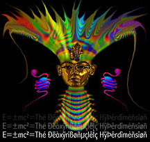
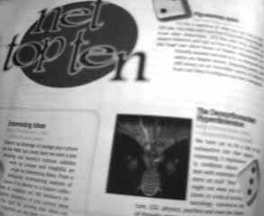
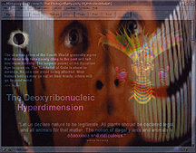

A brief timeline...
1990
Pre-web texts circulate through mailing lists, Usenet newsgroups and file servers like Gopher and FTP.
1993
1995
 Wired Magazine, Issue 3.07, July 1995 [1] [2]
Evolution, Revolution, Devolution
A conceptual offering of philosophic technoshamanism, the site known as The Deoxyribonucleic Hyperdimension is the last word on evolutionary ideas and knowledge. In cyberneuro reflections of visible language and virtual reality, the glittering Web strands of Hyperdimension resonate with octaves of energy approaching satori. Terence McKenna Land, Gaian Cybernetica, and, our favorite, It's Time to Mutate, are among the many interconnections of this global telepathy rave. Have a hyperdimensional mind meld at http://deoxy.org and engage in the revolution of the human being. (note: updated the url)
The .Net Directory (UK), Issue 6, July 1995
Kundalini Express
- Name: The Deoxyribonucleic Hyperdimension
- What is it?: Soul-searching with a toxic bent
- Where you'll find it: http://deoxy.org
- What's it like?:
- Upside: All very intelligent and that...
- Downside: Still smacks of the Dungeons and Dragons brigade
- Typical Quote: "Those humans awakening to the ongoing dialogue between their individual Central Neural Systems (CNS) and their originating DNA coils are now subject to intergalactic influences!"
- Overall:****
1996
Internet Underground, Volume 1 Issue 3, February 1996

The Deoxyribonucleic Hyperdimension
We have yet to hit a link on this exhaustive site that wasn't interesting. It impressively combines education with entertainment on stuff "they" might not want you to know, in a mix of science, sociology, subversive culture, LSD, physics and even the history of thought crimes, starting with that troublesome Galileo.
All of long with long discourses on shamanism, various philosophies and a bit of sound from the 1,000-arm audio Buddha. We must say, the creator also includes some of the most interesting link lists we've found on the Web.
Internet Underground, Volume 1 Issue 10, September 1996
Terence McKenna Land
Terence McKenna Land is the Mack Daddy of Web sites. From memes to mushrooms, McKenna is a guru writer and speaker on all matters metaphysical and ethnopharmacological. The site immerses the reader in McKenna's world of writings, teachings, interviews, speeches and psychedelic experiences. With the mounds of interesting content, McKenna Land, not Disneyland, may very well be the greatest place on earth. A scattering of trippy and bizarre images help to further dress up this text-heavy site.
NetGuide Live, 1996
The Deoxyribonucleic Hyperdimension
The Deoxyribonucleic Hyperdimension is a colorful, dazzling site playing host to all manner of millennial, neo-hippie, counter-culture, consciousness-expansion pages and hundreds of links to and for more such fields. Lots of sounds and visuals that defy simple explanation round out the experience. For a heady mix of philosophy, altered states of consciousness, and psychedelic computer graphics visit this site—it's out of this World (Wide Web).
The Village Voice, Net World listings, Date Unknown
SHROOM WITH A VIEW?
The pseudonymous Dimitri's Deoxyribonucleic Hyperdimension is a content-jammed post-hippie love fest of science, spiritualism, surrealism, and technology. Boasting more hot links than Jimmy Dean, this most psychedelic virtual garden of unearthly delights exemplifies do-it-yourself online idealism. Constantly expanding with state-of-the-art audio and visual flourishes, the Hyperdimension appears to morph before your disbelieving eyes. (Gehr)
1997
- 1st deoxyribonucleic hyperdiscussion 1997—1999
archive—first postdeleted by the host
1999
- 2nd deoxyribonucleic hyperdiscussion 1999?—2001?
- This forum was moderated by Mr. Spock, remember?

2001
- 3rd deoxyribonucleic hyperdiscussion 2001—Now
2004

2005
2006

2007
- Added ~25,000 videos (~30% deleted) the watch interface and image index